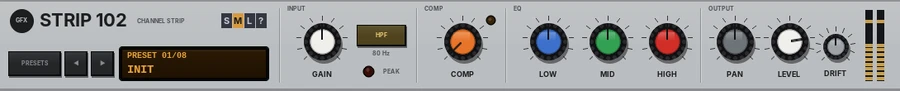

Strip 102
A slim horizontal channel strip in the spirit of a small 10-input desk: gain, HPF, one-knob compressor, 3-band EQ, pan and level.

Overview
Strip 102 is one channel of a small compact mixer, laid out as a slim horizontal strip so it takes up little room on screen. The signal runs left to right, as on the desk: GAIN into a gently colouring preamp, an 80 Hz high-pass filter, a one-knob compressor, a three-band EQ, then LEVEL and PAN.
The compressor needs one knob: turning it up lowers the threshold, raises the ratio and adds make-up gain together, so you dial in more control rather than setting four things. The EQ bands are fixed, as on the original: a low shelf at 100 Hz, a broad mid peak at 2.5 kHz and a high shelf at 10 kHz.
Reach for it for
- Quick, simple tone and level control on any track
- Vocals and acoustic instruments: HPF, a touch of COMP, a lift at 2.5 kHz
- Evening out bass and drums with one knob
- A small-mixer sound and workflow inside REAPER
Controls
INPUT
- GAIN
- Preamp gain, -24 to +24 dB. The preamp is clean at normal levels and rounds off gently, a little unevenly, when pushed hard.
- HPF
- An 80 Hz high-pass filter, 12 dB per octave, to clear rumble, handling noise and low-end mud.
- PEAK
- Lights when the signal after the EQ comes within 3 dB of clipping. Turn GAIN down if it stays lit.
COMP
- COMP
- The one-knob compressor, 0 to 10 (0 = off). Turning it up lowers the threshold from 0 to -30 dB and raises the ratio from 1:1 to 10:1, with a soft knee, and adds make-up gain as it goes. Quiet parts come up and loud parts are held down, so the level gets more even.
- COMP light
- Lights when the compressor is pulling the level down by more than 1 dB.
EQ
- LOW
- A shelf at 100 Hz, -15 to +15 dB.
- MID
- A broad peak at 2.5 kHz, -15 to +15 dB: presence and bite, or cut it for a softer sound.
- HIGH
- A shelf at 10 kHz, -15 to +15 dB: air and sparkle.
OUTPUT
- PAN
- Constant-power pan. On a stereo track it works as a balance control: the centre stays at full level on both sides.
- LEVEL
- The channel level, -40 dB (OFF) to +10 dB (0 dB by default).
- DRIFT
- See Drift below.
- Meters
- Output level, left and right. Click them to reset the peak hold.
Presets and size
- PRESETS
- Opens the list of factory presets (or click the preset display). Choosing one sets GAIN, HPF, COMP and the EQ; PAN, LEVEL and DRIFT are left alone.
- ◄ / ►
- Step through the presets.
- Preset display
- Shows the preset number and name. Click it for the list.
- S / M / L
- Panel size: small, medium or large. The panel also scales to fit the plugin window.
- ?
- Opens a pop-up with the design credit, the GFX website address and the address of this manual. Click anywhere to close it.
Band saturation (parameter list only)
The GFX band saturation runs under the hood, after LEVEL, and has no controls on the panel: set it from REAPER's parameter list. BAND SAT (0% by default) adds the house low- and high-band saturation, with BIAS and the two band frequencies to shape it.
Drift
DRIFT (0 - 100%, 50% by default) works on the preamp. The supply voltage wanders slowly, so the preamp's headroom and gain move a little, and its saturation wanders too: how hard it rounds off, and how unevenly. You hear it most when GAIN is pushed. 50% is the standard amount, 100% twice that, 0 steady; the wander also speeds up as you turn it up.
Presets
- Init
- Everything flat, compressor off.
- Vocal
- +6 dB gain, HPF on, COMP 4, a little less low end, more mid and air.
- Acoustic Guitar
- HPF on, COMP 3, less boom, a brighter top.
- Bass DI
- COMP 6, more low end, less mid and top.
- Kick
- COMP 3, low end up, the mid scooped, a little click.
- Snare
- HPF on, COMP 5, crack at 2.5 kHz and a brighter top.
- Keys
- COMP 2, a slightly lighter low end and a brighter top.
- Squash
- +4 dB gain and COMP 9: heavy, even compression.
Tips
- Set GAIN first so PEAK only flickers on the loudest notes, then add COMP.
- Use HPF on almost everything except bass and kick.
- Cutting MID often works better than boosting LOW and HIGH together.
- The strip is short and wide: drag the plugin window wide and low to fit it under your other plug-ins.
File: gfx-strip-102.jsfx